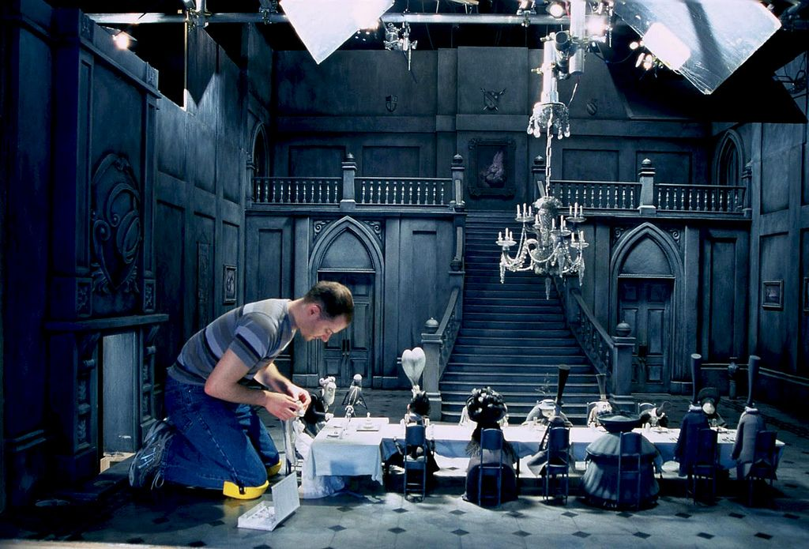
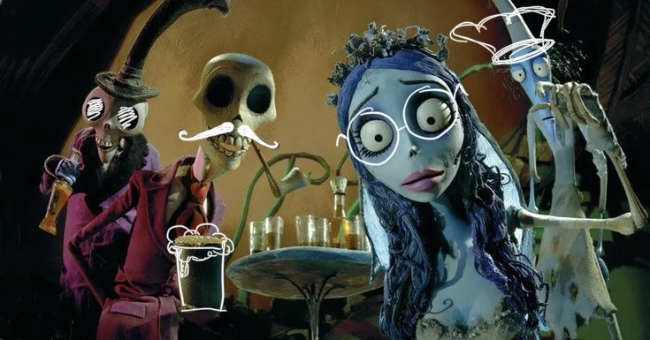
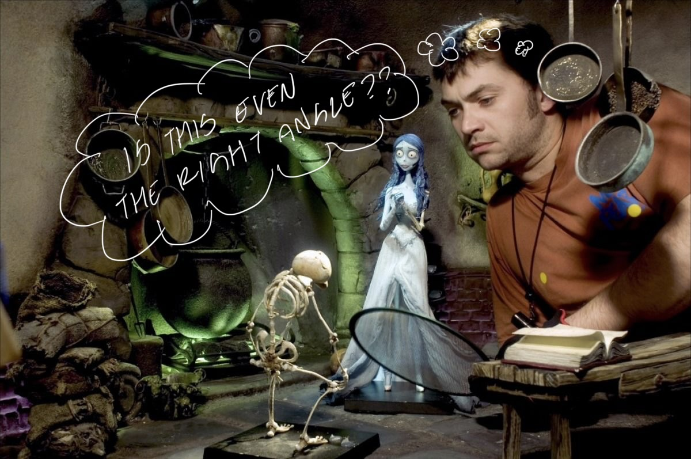
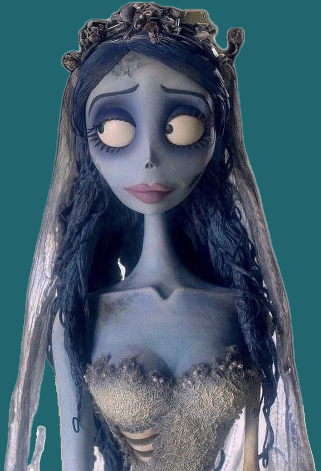

Corpse Bride




Corpse Bride is a dark yet charming animated film that tells a story of a young man named Victor, who accidentally marries a ghost named Emily (“corpse bride”) while practicing his wedding vows alone in the woods. Caught between the world of the living and the dead, Victor has to decide where his heart truly belongs between Emily and Victoria, while Emily learns to let go of her past and find peace. I find this movie to be about romance with a touch of a gothic aesthic based on the mood of tone and physical characteristics of the characters. The music along some scenes makes you forget the type of production it is, because the creativity and the movement makes it feel like a different realm of possibility within the creation of the movie.
Tim Burton